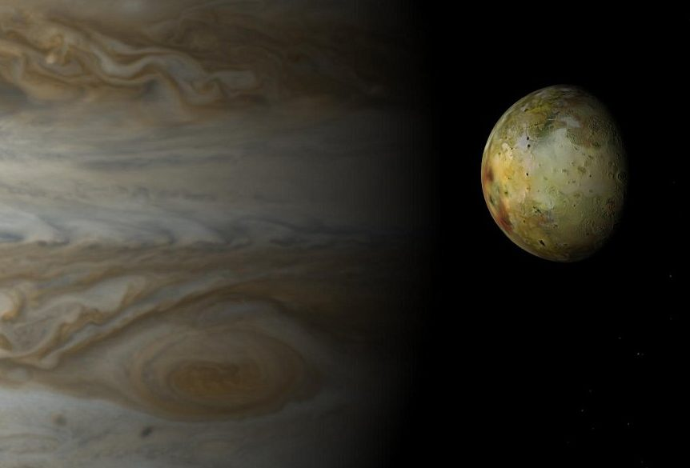
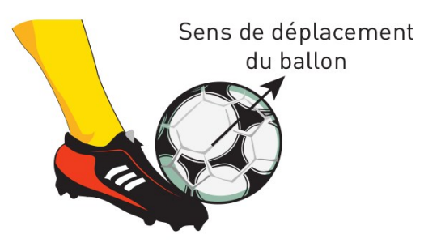
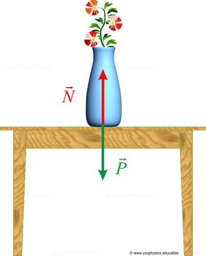
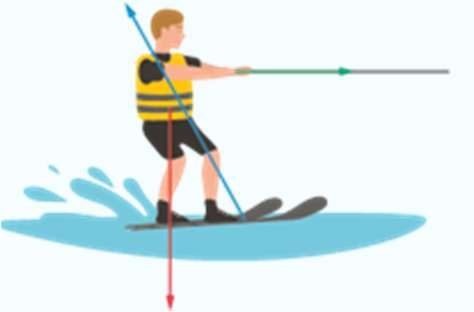
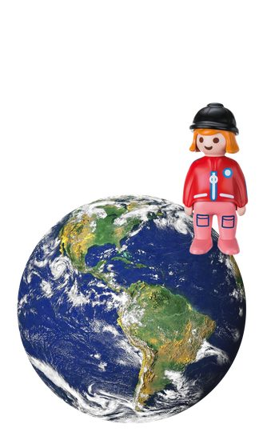

Modéliser une action sur un système
Ce chapitre sera débloqué en fin de séquence, au rythme de la classe. Le code de déblocage est transmis via le cahier de textes — il figure aussi en bas de ta fiche de cours.
Sommaire du chapitre
Physique-Chimie · 2nde · Thème 2 — Mouvements et interactions
Modéliser une action sur un système
Thème 2 · Chapitre 2 — cours & exercices corrigés
01 Actions mécaniques et notion de force
A — Actions mécaniques
Une action mécanique est le nom général donné en physique à toute action exercée par un objet sur un autre.
Une action mécanique peut avoir plusieurs effets sur un objet :
- elle peut le mettre en mouvement ;
- elle peut modifier son mouvement (trajectoire et/ou vitesse) ;
- elle peut le déformer (exemple d'une balle de tennis frappée par la raquette).
Il existe de nombreuses façons d'agir sur un objet et cette action peut se faire à distance ou par contact.
Donner d'autres exemples d'actions mécaniques par contact et à distance.
Voir la correction
Actions mécaniques par contact : frottements, tension, traction etc.
Actions mécaniques à distance : attraction gravitationnelle, électricité, magnétisme etc.
Une action en appelle souvent une autre, en retour : c'est l'idée d'interaction.
B — Interaction
Deux systèmes sont en interaction s'ils exercent une action mécanique l'un sur l'autre et réciproquement ; le mouvement de chacun dépend de la présence de l'autre.

Créer le diagramme objets-interactions décrivant la situation montrée sur cette image.

Voir la correction
Dire qui agit sur qui ne suffit pas : pour prévoir l'effet d'une action, il faut la modéliser.
C — Représenter l'action mécanique par une force
Pour étudier l'effet d'une action mécanique sur un système il faut pouvoir la modéliser, on utilise pour cela le concept de force.
Une force est caractérisée par les éléments suivants :
- son point d'application : l'endroit de l'objet où elle s'exerce. Si l'action est par contact ce sera le point de contact. Si l'action est à distance on utilise généralement le centre de gravité de l'objet ;
- sa direction (verticale, horizontale …) : la droite selon laquelle elle s'exerce ;
- son sens, car chaque direction possède 2 sens (haut ou bas, droite ou gauche …).


Modéliser les actions mécaniques qui s'appliquent sur un avion en vol.
Voir la correction
La norme d'une force est exprimée en newton (N), en hommage à Isaac Newton qui a établi les lois des mouvements en 1687. La force est notée par la lettre F surmontée d'une flèche et suivie du couple objet qui agit / objet sur lequel on agit.
On représente cette force par une flèche et il est possible de représenter la longueur de cette flèche proportionnellement à la grandeur de la force afin de faciliter les comparaisons de force par la suite.
Le pot de fleur subit deux forces, l'une d'elle, R, est déjà représentée. L'autre, P, vaut 10 N, est verticale, orientée vers le bas ; son point d'application est le centre de gravité du système.
1 – Représenter la seconde force.
2 – Retrouver la norme de la force déjà représentée.
3 – En déduire une relation liant les deux forces.
Voir la correction
La norme de R vaut elle aussi 10 N, son sens est opposé à celui de P.
P = −R
02 Principe des actions réciproques
Revenons à l'interaction : si A agit sur B, B agit sur A. Que dire de ces deux forces ?
Selon la troisième loi de Newton, ou principe des actions réciproques, ou encore principe d'action/réaction, la force exercée par un système B sur un système A est l'opposée de la force exercée par le système A sur le système B :
FA/B = −FB/A
Ces deux forces ont donc la même direction ; des sens opposés ; la même norme.
Fsol/ballon = −FTerre/ballon
Attention : ces deux forces s'exercent toutes deux sur le ballon. La troisième loi de Newton, elle, associe Fsol/ballon à Fballon/sol, la force exercée par le ballon sur le sol.
La combustion du carburant d'un moteur fusée provoque son éjection (action), ce qui induit en retour une poussée permettant de faire décoller la fusée (réaction).
Représenter ces forces, il n'y a pas d'échelle à respecter.
Voir la correction
Fair/fusée = −Ffusée/air
03 Exemples de forces
A — La force d'interaction gravitationnelle
Isaac Newton définit la gravitation de la façon suivante : « Deux objets quelconques exercent entre eux des forces d'interaction, forces attractives, à distance, appelées forces gravitationnelles ». Deux objets sont donc soumis à une interaction attractive réciproque due à leur masse, c'est l'interaction gravitationnelle.
L'interaction gravitationnelle entre deux corps ponctuels A et B est modélisée par des forces d'attraction gravitationnelle FA/B et FB/A :
- appliquées au centre du corps attiré : B pour FA/B et A pour FB/A ;
- dirigées suivant la droite (AB) ;
- orientées vers le centre du corps attracteur : A pour FA/B et B pour FB/A ;
- de normes FA/B et FB/A données par la loi de la gravitation universelle.
Deux objets de masses respectives mA et mB s'attirent avec des forces de même valeur (mais de sens opposés), proportionnelles à leurs masses et inversement proportionnelles au carré de la distance qui les sépare. La direction de ces forces est une droite passant par les centres de gravité de ces deux corps.
Pour deux objets sphériques homogènes, on peut calculer la valeur (norme) de la force gravitationnelle :
mB masse du corps B · kg
dAB distance entre les centres de gravité des deux corps · m
G constante de gravitation universelle · N·m2·kg−2
Avec G = 6,67 × 10−11 N·m2·kg−2
Calculez la norme de la force d'interaction gravitationnelle entre la Terre et la Lune puis représentez-la sur le schéma.
| Astre | Rayon (km) | Masse (kg) |
|---|---|---|
| Soleil | 698 000 | 1,9890 × 1030 |
| Mercure | 2 439,0 | 3,2800 × 1023 |
| Vénus | 6 056,8 | 4,8700 × 1024 |
| Lune | 1 738,0 | 7,3400 × 1022 |
| Terre | 6 378,0 | 5,9800 × 1024 |
| Mars | 3 397,2 | 6,4200 × 1023 |
| Jupiter | 71 398 | 1,90 × 1027 |
| Saturne | 60 018 | 5,6900 × 1026 |
| Uranus | 25 559 | 8,6810 × 1025 |
| Neptune | 24 764 | 1,0240 × 1026 |
Données : dTerre/Lune = 384 400 km
Voir la correction
FA/B = FB/A = G × mA × mBdAB2
FTerre/Lune = FLune/Terre = G × mTerre × mLunedTerre–Lune2
dTerre–Lune = 3,844 × 105 km = 3,844 × 108 m
FTerre/Lune = FLune/Terre = 6,67 × 10−11 × 5,98 × 1024 × 7,34 × 1022(3,844 × 108)2
FTerre/Lune = FLune/Terre ≈ 1,98 × 1020 N
Et si l'un des deux corps est la Terre, et l'autre un objet posé à sa surface ?
B — Le poids

Que se passe-t-il si l'on applique la formule de la force d'attraction gravitationnelle au voisinage de la Terre ? Prenons le cas d'un objet de masse m à la surface de la Terre de masse mT, la distance qui sépare les deux objets est alors le rayon de la Terre RT. L'objet est attiré par la Terre et réciproquement, cette force appelons-la F. Elle s'écrit alors :
F = G × m × mTRT2
On réorganise la formule pour isoler ce qui est constant à la surface de la Terre et on trouve :
F = G × mTRT2 × m = g × m ⟹ P = m × g
On appelle cette constante g, l'accélération de pesanteur, et la force F devient la force P, appelée poids.
Faire l'application numérique de la partie constante de l'expression précédente pour retrouver la valeur moyenne de g.
Données : RT = 6 380 km
Voir la correction
RT = 6 380 km = 6,380 × 106 m
g = G × mTRT2 = 6,67 × 10−11 × 5,98 × 1024(6,380 × 106)2 ≈ 9,80 N·kg−1
À la surface d'un astre, comme la Terre, un corps est soumis à une force de pesanteur. Son poids P est représenté par un vecteur :
- appliqué au centre de gravité G du corps ;
- dirigé à la verticale, suivant la droite reliant G et le centre de l'astre ;
- orienté vers le bas, soit vers le centre de l'astre ;
- de norme P ayant pour expression :
m masse du corps · kg
g accélération de pesanteur · m·s−2 ou N·kg−1
| Astre | Multiple de la gravité terrestre | g (m·s−2) | Temps de chute de 100 m | Vitesse maximale atteinte |
|---|---|---|---|---|
| Soleil | 27,90 | 274,1 | 0,85 s | 843 km/h |
| Mercure | 0,3770 | 3,703 | 7,4 s | 98 km/h |
| Vénus | 0,9032 | 8,872 | 4,8 s | 152 km/h |
| Terre ← | 1 | 9,8067 | 4,5 s | 159 km/h |
| Lune | 0,1655 | 1,625 | 11,1 s | 65 km/h |
| Mars | 0,3895 | 3,728 | 7,3 s | 98 km/h |
| Jupiter | 2,640 | 25,93 | 2,8 s | 259 km/h |
| Io | 0,182 | 1,789 | 10,6 s | 68 km/h |
| Europe | 0,134 | 1,314 | 12,3 s | 58 km/h |
| Callisto | 0,126 | 1,24 | 12,7 s | 57 km/h |
| Saturne | 1,139 | 11,19 | 4,2 s | 170 km/h |
| Titan | 0,138 | 1,3455 | 12,2 s | 59 km/h |
| Uranus | 0,917 | 9,01 | 4,7 s | 153 km/h |
| Neptune | 1,148 | 11,28 | 4,2 s | 171 km/h |
| Triton | 0,079 | 0,779 | 16,0 s | 45 km/h |
| Pluton | 0,0621 | 0,610 | 18,1 s | 40 km/h |
g = G × Mr2
Pour la Terre : M = 5,983 × 1024 kg · r = 6,36 × 106 m · G = 6,67 × 10−11 N·m2·kg−2
Calcule ton poids à Paris et au niveau de l'équateur. Quantifier l'écart entre les valeurs trouvées.
Voir la correction
Soit m = 65,0 kg, la masse ne varie pas d'une position à l'autre.
À Paris :
gParis = 9,81 N·kg−1 → PParis = m × gParis = 65,0 × 9,81 ≈ 638 N
Au niveau de l'équateur :
géquateur = 9,73 N·kg−1 → Péquateur = m × géquateur = 65,0 × 9,73 ≈ 632 N
PParis − PéquateurPParis = 637,65 − 632,45637,65 ≈ 0,008
Le poids dépend de la position sur Terre (on constate une différence d'environ 0,8 %).
Un objet subit une force attractive (poids lunaire) de 1500 N à la surface de la Lune. Calculer sa masse. Serait-elle la même sur Terre ?
Voir la correction
Plunaire = mlunaire × glunaire → mlunaire = Plunaireglunaire
mlunaire = mTerre = 15001,625 ≈ 923,1 kg
Le poids est une action à distance. Passons aux actions de contact : un support, puis un fil.
C — Réaction du support
Lorsqu'un corps est en contact avec une surface, il exerce des actions de contact sur cette dernière, qui, suivant le principe des actions réciproques, exerce à son tour une action mécanique sur le solide appelée réaction du support et notée R.
En l'absence de frottements, cette réaction du support est :
- dirigée perpendiculairement à la surface du support ;
- orientée vers le haut.
Si le corps est immobile sur une surface horizontale, alors la réaction du support compense son poids :
R = −P
Compléter l'image 14 en ajoutant le poids du système.
Voir la correction
Correction rédigée par Claude — à valider : la source corrigée ne porte pas de corrigé pour cet exercice.
Dans les deux cas, le poids a les mêmes caractéristiques :
- Direction : verticale ;
- Sens : vers le bas, vers le centre de la Terre ;
- Point d'application : le centre de gravité G ;
- Norme : P = m × g — elle ne change pas non plus.
Le solide est immobile et n'est soumis qu'à deux forces : elles se compensent exactement.
RN = −P
Le poids ne bascule pas avec le plan : il reste vertical. La réaction du support, elle, reste perpendiculaire au plan, donc inclinée du même angle que celui-ci. Les deux forces ne sont donc plus opposées : leur somme n'est pas nulle.
Sans autre action, le solide glisserait : ce sont les frottements — non représentés ici — qui le retiennent. C'est exactement la situation reprise à l'exercice 11, où un fil joue ce rôle.
D — Tension d'un fil
Lorsqu'un corps est attaché par un lien rigide (barre métallique, …) ou non (fil, câble, …), ce dernier exerce une action mécanique sur le corps, appelée tension et notée T.
Cette tension est :
- dirigée suivant l'axe du lien ;
- orientée du solide vers le lien.
Un solide est attaché sur un plan incliné. Étant immobile, il n'y a pas de frottements.
Indiquer les caractéristiques des forces s'appliquant sur le solide et les représenter, sans souci d'échelle, sur le schéma.
Voir la correction
Le solide subit trois forces : son poids P, la réaction du support R et la tension du fil T.
- Direction : verticale | perpendiculaire au sol ;
- Point d'application : centre de gravité du solide (G) ;
- Sens : vers le bas | vers le centre de la Terre ;
- Norme : P = m × g.
- Direction : perpendiculaire au support ;
- Point d'application : centre de la surface de contact entre le solide et le support (C) ;
- Sens : vers le haut | vers le solide ;
- Norme : ∅.
- Direction : colinéaire à l'axe du fil ;
- Point d'application : point de contact entre le fil et le solide (A) ;
- Sens : vers la droite | vers le fil ;
- Norme : ∅.
✓ Pour le DS, je sais :
- 01 · man. 6 p.227
- 01 · man. 10 p.227 · 7 p.227
- 02 · man. 15 p.228 · 16 p.228
- 03 · man. 11 p.227 · 13 p.228
- 03 · man. 21 p.230
- 03 · man. 8 p.227 · 12 p.227
M. Van HoordeLycée général Isaac de l'Étoile · Poitiers